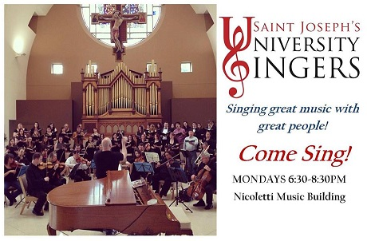
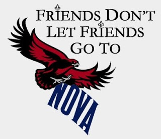
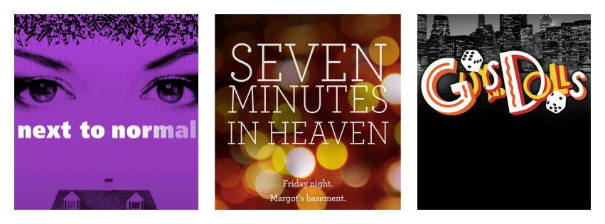
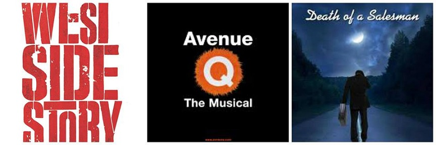

Saint Joseph's University
Singers
I joined the Saint Joseph's University Singers my freshman year. It is your typical choir, but the only one of its kind on campus. We sing traitional choir music, and religious songs as well. We also perform a holiday concert of Christmas music each December. One of the best things about this group is that we tour every spring. We've gone to New York City, Boston, and Washington D.C., singing at various places. We even sung at Father Gillespie's Presidential Inauguration, which was a big honor for us.
SJU
My experience at Saint Joe's has been one of the best experiences of my life. No, really. I am so happy that I chose to come here, considering I never even heard of this school until I applied. I was visiting a friend at Villanova (boo), and had to drive past SJU on the way. My dad mentioned that a family friend was considering coming here, and that we should get out and walk around, since we were here anyway. I was not about it at all, and just wanted to get to Nova because Nova is just so much fun (just kidding). Unwillingly I agreed, and I actually really liked the campus so I thought what the heck, I'll apply. This was my first acceptance letter, and I recieved scholarship and grant money, so that was pretty awesome. I came to Accepted Students Day and I was sold. This is where I wanted to be.
Theatre Co.
Theatre is my absolute favorite thing in the world. I listen to Broadway showtunes more than I should, and make at least three references to shows daily. I have done theatre since I was twelve, and have done everything from costumes to acting to props to stage managing. I acted throughout my four years in high school and it was an absoulte blast. I took that into college, and you can find me assistant stage managing our spring production of Avenue Q, which I am beyond excited for.
 Clubs
Though theatre here takes up most of my time, I am very supportive of many other groups on campus: SJU Improv club, Followed By A Bear (student run theatre scenes), Radio 1851, and City Belles/54th & City (acapella groups). I also belong to Hand In Hand, a club that organizes a carnival in the spring for special needs kids. We fundraise and do other activities to help our cause!
Check out their Facebook pages: